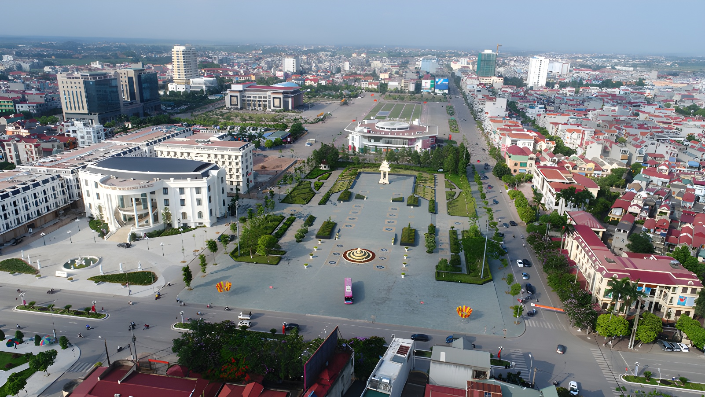

My Favorite Place

My Favorite Place
Talking about my favorite place, Bac Giang city is the place I always reserve a place in my heart. Bac Giang is about 50km northeast of Hanoi, so traveling between the two cities for sightseeing and dining is quite convenient. Although it has gone through many new and new names, it has changed its name to Bac Ninh city, every time someone asks me where my hometown is, I will still proudly say Bac Giang city. Although it is not a big city or province like Hanoi or Ho Chi Minh City, this place still has specialties, delicious food such as duck pho, Luc Ngan lychee, beefsteak,... or entertainment venues such as GO and Vincom. In addition, Bac Giang also has many famous tourist destinations such as Tay Yen Tu temple, Lang Son cotton tree, Suoi Mo,... which still attract many tourists every year. What make Bac Giang city unique is that it has rapidly developed in the last 10 years yet still retaining many traditional values. For instance, 10 years ago, Bac Giang was not as modern as it is now, the roads were still very congested with many difficult terrains, the city planning was not really good, so traffic jams when going to school and work were a daily occurrence. Today, roads have been widened and built, making it very easy to travel between regions. Furthermore, many new apartment buildings and schools have been built, so traffic jams have been reduced somewhat. However, the train stations that have been running for 40 years are still in operation, the grocery stores and restaurants around my house are still operating as if 10 years ago were just yesterday, creating a balance between breakthrough development and sentimental values.